Flow Around a Square and Flow Visualization with Passive Scalar#
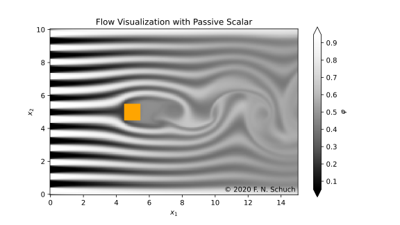
The no-flux boundary condition for the scalar field(s) at the solid/fluid interface is experimental, and it is still not available at XCompact3d’s main repository.
import matplotlib.pyplot as plt
import numpy as np
import xarray as xr
import xcompact3d_toolbox as x3d
Parameters#
Numerical precision
Use np.float64 if Xcompact3d was compiled with the flag -DDOUBLE_PREC, use np.float32 otherwise.
x3d.param["mytype"] = np.float64
Xcompact3d’s parameters
For more information about them, checkout the API reference.
prm = x3d.Parameters(
filename="input.i3d",
# BasicParam
itype=12,
p_row=0,
p_col=0,
nx=257,
ny=129,
nz=32,
xlx=15.0,
yly=10.0,
zlz=3.0,
nclx1=2,
nclxn=2,
ncly1=1,
nclyn=1,
nclz1=0,
nclzn=0,
iin=1,
re=300.0,
init_noise=0.0125,
inflow_noise=0.0125,
dt=0.0025,
ifirst=1,
ilast=90000,
ilesmod=1,
iibm=2, # This is experimental, not available at the main repo
# NumOptions
nu0nu=4.0,
cnu=0.44,
# InOutParam
irestart=0,
icheckpoint=45000,
ioutput=500,
iprocessing=100,
# LESModel
jles=4,
# ScalarParam
numscalar=1,
nclxS1=2,
nclxSn=2,
nclyS1=1,
nclySn=1,
nclzS1=0,
nclzSn=0,
sc=[1.0],
ri=[0.0], # Zero for numerical dye
uset=[0.0], # Zero for numerical dye
cp=[1.0],
# iibmS=3, # This is experimental, not available at the main repo
)
Setup#
Geometry#
Everything needed is in one dictionary of Arrays (see API reference):
epsi = x3d.init_epsi(prm)
The four \(\epsilon\) matrices are stored in a dictionary:
epsi.keys()
dict_keys(['epsi', 'xepsi', 'yepsi', 'zepsi'])
Now we draw a square:
# Here we set the center
center = {"x": prm.xlx / 3.0, "y": prm.yly / 2.0}
# And apply geo.box over the four arrays
for key in epsi:
epsi[key] = epsi[key].geo.box(
x=[center["x"] - 0.5, center["x"] + 0.5],
y=[center["y"] - 0.5, center["y"] + 0.5],
)
# A quickie plot for reference
epsi["epsi"].sel(z=0, method="nearest").plot(x="x")
<matplotlib.collections.QuadMesh at 0x7f38161356a0>
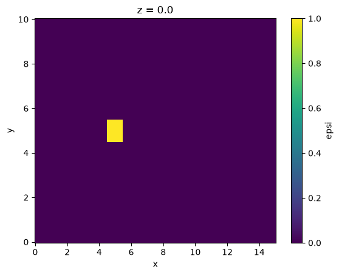
Curved surfaces are not supported (yet?) for the no-flux condition for the scalar field(s) at the solid/fluid interface, so let’s stay with the square.
The next step is to produce all the auxiliary files describing the geometry, so then Xcompact3d can read them:
%%time
dataset = x3d.gene_epsi_3d(epsi, prm)
prm.nobjmax = dataset.obj.size
dataset
CPU times: user 2.4 s, sys: 22.1 ms, total: 2.42 s
Wall time: 2.42 s
<xarray.Dataset> Size: 4MB
Dimensions: (x: 257, y: 129, z: 32, obj: 1, obj_aux: 2)
Coordinates:
* x (x) float64 2kB 0.0 0.05859 0.1172 0.1758 ... 14.88 14.94 15.0
* y (y) float64 1kB 0.0 0.07812 0.1562 0.2344 ... 9.844 9.922 10.0
* z (z) float64 256B 0.0 0.09375 0.1875 ... 2.719 2.812 2.906
* obj (obj) int64 8B 0
* obj_aux (obj_aux) int64 16B -1 0
Data variables: (12/28)
epsi (x, y, z) bool 1MB False False False ... False False False
nobj_x (y, z) int64 33kB 0 0 0 0 0 0 0 0 0 0 ... 0 0 0 0 0 0 0 0 0 0
nobjmax_x int64 8B 1
nobjraf_x (y, z) int64 33kB 0 0 0 0 0 0 0 0 0 0 ... 0 0 0 0 0 0 0 0 0 0
nobjmaxraf_x int64 8B 1
ibug_x int64 8B 0
... ...
nxipif_y (x, z, obj_aux) int64 132kB 2 2 2 2 2 2 2 2 ... 2 2 2 2 2 2 2
nxfpif_y (x, z, obj_aux) int64 132kB 128 2 128 2 128 ... 2 128 2 128 2
xi_z (x, y, obj) float64 265kB 0.0 0.0 0.0 0.0 ... 0.0 0.0 0.0 0.0
xf_z (x, y, obj) float64 265kB 0.0 0.0 0.0 0.0 ... 0.0 0.0 0.0 0.0
nxipif_z (x, y, obj_aux) int64 530kB 2 2 2 2 2 2 2 2 ... 2 2 2 2 2 2 2
nxfpif_z (x, y, obj_aux) int64 530kB 31 2 31 2 31 2 ... 31 2 31 2 31 2Boundary Condition#
Everything needed is in one Dataset (see API reference):
ds = x3d.init_dataset(prm)
Let’s see it, data and attributes are attached, try to interact with the icons:
ds
<xarray.Dataset> Size: 34MB
Dimensions: (x: 257, y: 129, z: 32, n: 1)
Coordinates:
* x (x) float64 2kB 0.0 0.05859 0.1172 0.1758 ... 14.88 14.94 15.0
* y (y) float64 1kB 0.0 0.07812 0.1562 0.2344 ... 9.844 9.922 10.0
* z (z) float64 256B 0.0 0.09375 0.1875 ... 2.719 2.812 2.906
* n (n) int64 8B 1
Data variables:
bxx1 (y, z) float64 33kB 0.0 0.0 0.0 0.0 0.0 ... 0.0 0.0 0.0 0.0
bxy1 (y, z) float64 33kB 0.0 0.0 0.0 0.0 0.0 ... 0.0 0.0 0.0 0.0
bxz1 (y, z) float64 33kB 0.0 0.0 0.0 0.0 0.0 ... 0.0 0.0 0.0 0.0
noise_mod_x1 (y, z) float64 33kB 0.0 0.0 0.0 0.0 0.0 ... 0.0 0.0 0.0 0.0
bxphi1 (n, y, z) float64 33kB 0.0 0.0 0.0 0.0 0.0 ... 0.0 0.0 0.0 0.0
ux (x, y, z) float64 8MB 0.0 0.0 0.0 0.0 0.0 ... 0.0 0.0 0.0 0.0
uy (x, y, z) float64 8MB 0.0 0.0 0.0 0.0 0.0 ... 0.0 0.0 0.0 0.0
uz (x, y, z) float64 8MB 0.0 0.0 0.0 0.0 0.0 ... 0.0 0.0 0.0 0.0
phi (n, x, y, z) float64 8MB 0.0 0.0 0.0 0.0 ... 0.0 0.0 0.0 0.0Inflow profile: Since the boundary conditions for velocity at the top and at the bottom are free-slip in this case (ncly1=nclyn=1), the inflow profile for streamwise velocity is just 1 everywhere:
fun = xr.ones_like(ds.y)
# This attribute will be shown in the figure
fun.attrs["long_name"] = r"Inflow Profile - f($x_2$)"
fun.plot()
[<matplotlib.lines.Line2D at 0x7f3814e85d10>]
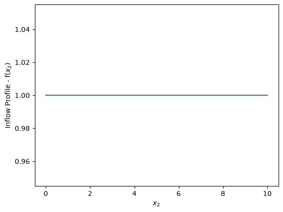
Now, we reset the inflow planes ds[key] *= 0.0, just to guarantee consistency in case of multiple executions of this cell. Notice that ds[key] = 0.0 may overwrite all the metadata contained in the array, so it should be avoided. Then, we add the inflow profile to the streamwise componente and plot them for reference:
for key in "bxx1 bxy1 bxz1".split():
print(ds[key].attrs["name"])
ds[key] *= 0.0
if key == "bxx1":
ds[key] += fun
ds[key].plot()
plt.show()
plt.close("all")
Inflow Plane for Streamwise Velocity
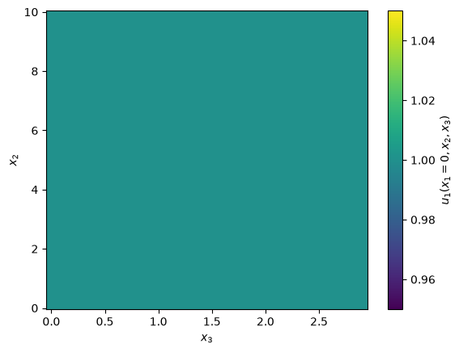
Inflow Plane for Vertical Velocity
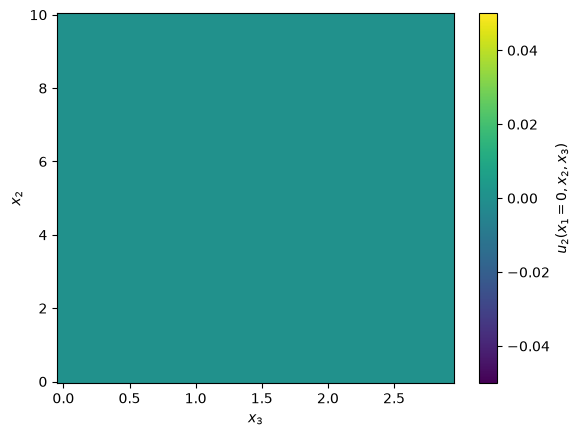
Inflow Plane for Spanwise Velocity
A random noise will be applied at the inflow boundary, we can create a modulation function mod to control were it will be applied. In this case, we will concentrate the noise near the center region and make it zero were \(y=0\) and \(y=L_y\). The domain is periodic in \(z\) nclz1=nclzn=0, so there is no need to make mod functions of \(z\). The functions looks like:
See the code:
# Random noise with fixed seed,
# important for reproducibility, development and debugging
if prm.iin == 2:
np.random.seed(seed=67)
mod = np.exp(-0.2 * (ds.y - ds.y[-1] * 0.5) ** 2.0)
# This attribute will be shown in the figure
mod.attrs["long_name"] = "Noise modulation"
mod.plot()
[<matplotlib.lines.Line2D at 0x7f3814cc7d90>]
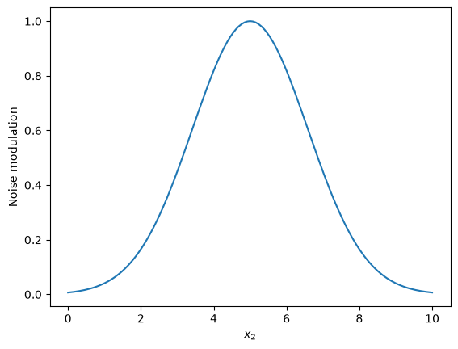
Again, we reset the array ds['noise_mod_x1'] *= 0.0, just to guarantee consistency in case of multiple executions of this cell. Notice that ds['noise_mod_x1'] *= 0.0 may overwrite all the metadata contained in the array, so it should be avoided. Then, we add the modulation profile to the proper array and plot it for reference:
ds["noise_mod_x1"] *= 0.0
ds["noise_mod_x1"] += mod
ds.noise_mod_x1.plot()
<matplotlib.collections.QuadMesh at 0x7f3814bb4cd0>
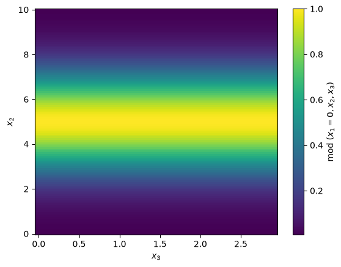
Notice one of the many advantages of using xarray, mod, with shape (ny), was automatically broadcasted for every point in z into ds.noise_mod_x1, with shape (ny, nz).
Inflow BC for the passive scalar: For this case, the choice was a “smooth” square wave, because it is differentiable.
Notice that Xcompact3d supports multiple scalar fields (controlled by numscalar, this example just includes one), so different visualization patterns can be set for each one of them.
# Concentration
print(ds["bxphi1"].attrs["name"])
ds["bxphi1"] *= 0.0
for n in range(prm.numscalar):
ds["bxphi1"][{"n": n}] += (
0.5 + np.arctan(np.sin(2.0 * np.pi * ds.y / prm.yly * 11.5) * (prm.sc[n] * prm.re) ** 0.5) / np.pi
)
ds.bxphi1.isel(n=n).plot()
plt.show()
plt.close("all")
Inflow Plane for Scalar field(s)
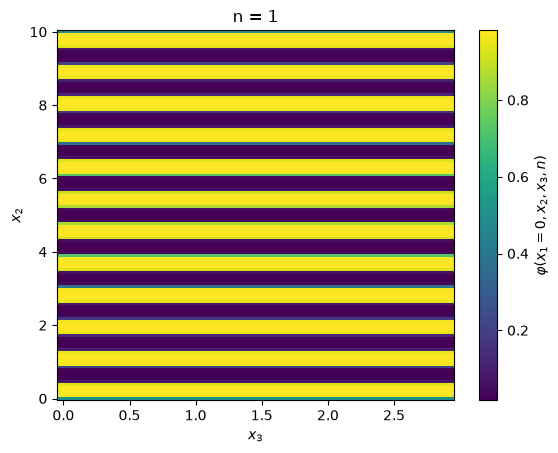
Initial Condition#
Now we reset velocity fields ds[key] *= 0.0, just to guarantee consistency in the case of multiple executions of this cell.
We then add a random number array with the right shape, multiply by the noise amplitude at the initial condition init_noise and multiply again by our modulation function mod, defined previously. Finally, we add the streamwise profile fun to ux and make the plots for reference, I’m adding extra options just to exemplify how easily we can slice the spanwise coordinate and produce multiple plots:
for key in "ux uy uz".split():
print(ds[key].attrs["name"])
ds[key] *= 0.0
ds[key] += prm.init_noise * (np.random.random(ds[key].shape) - 0.5)
ds[key] *= mod
if key == "ux":
ds[key] += fun
ds[key].sel(z=slice(None, None, ds.z.size // 3)).plot(x="x", y="y", col="z", col_wrap=2)
plt.show()
plt.close("all")
Initial Condition for Streamwise Velocity
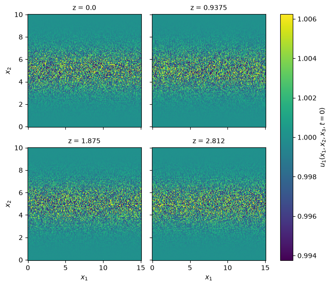
Initial Condition for Vertical Velocity
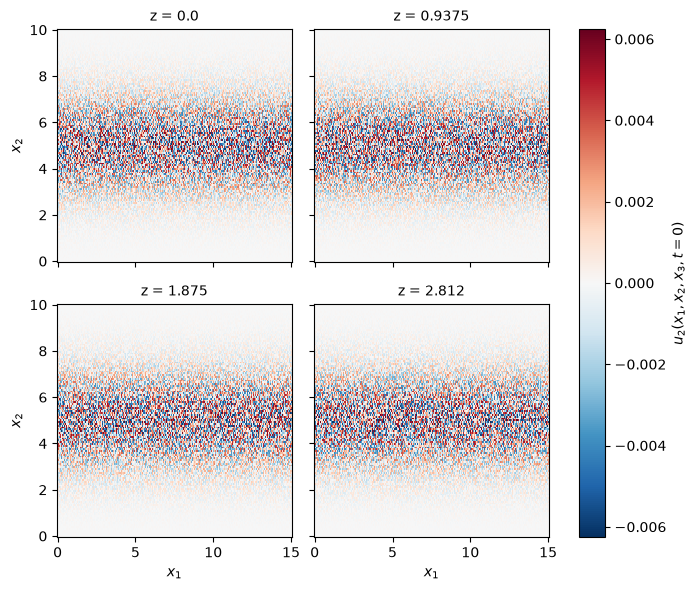
Initial Condition for Spanwise Velocity
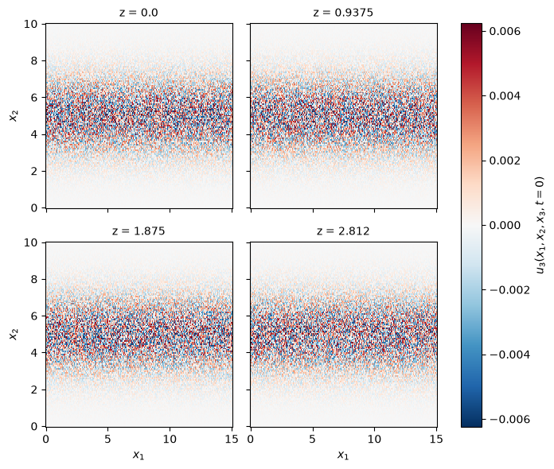
For concentration, let’s start with a clean domain:
ds["phi"] *= 0
Writing to the disc#
is as simple as:
prm.dataset.write(ds)
prm.write()
Running the Simulation#
It was just to show the capabilities of xcompact3d_toolbox.sandbox, keep in mind the aspects of numerical stability of our Navier-Stokes solver. It is up to the user to find the right set of numerical and physical parameters.
Make sure that the compiling flags and options at Makefile are what you expect. Then, compile the main code at the root folder with make.
And finally, we are good to go:
mpirun -n [number of cores] ./xcompact3d |tee log.out